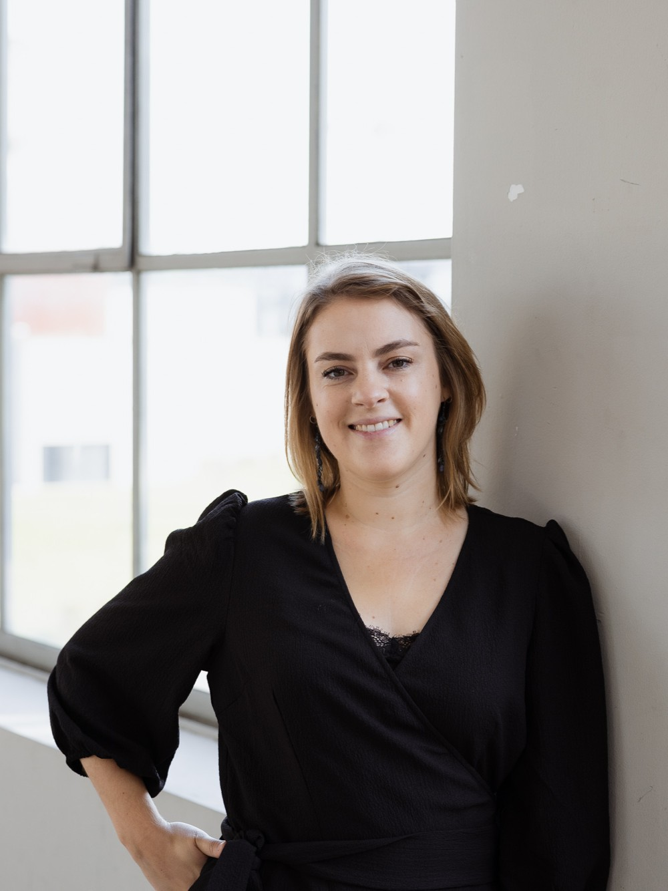

Mijn naam is Elisa, een creatieve duizendpoot met een achtergrond in grafisch ontwerp, UX/UI design en front-end development. Ik hou van mooie ontwerpen, creatieve ideeën, potloden en sushi.
Creativiteit heeft altijd een belangrijke rol gespeeld in mijn leven. Als kind was ik al graag aan het tekenen en kreeg ik vaak te horen dat ik daar verder mee moest gaan. Uiteindelijk volgde ik mijn creatieve interesses en maakte ik in 2019 de overstap van het onderwijs naar de digitale en grafische wereld.
Wat mij daarin aanspreekt, is de combinatie van creativiteit en mensen. Ik vind het fijn om na te denken over hoe je ideeën en informatie op een heldere en toegankelijke manier kunt overbrengen, zodat anderen er ook echt iets aan hebben.
Met nieuwsgierigheid en oog voor detail luister ik graag naar wat mensen nodig hebben, om zo samen tot ideeën en oplossingen te komen die bij hen passen.

Ik studeerde af als leerkracht, maar mijn passie lag ergens anders. Dus ging ik opnieuw studeren: een jaaropleiding front-end developer, en in zelfstudie printdesign.
Ongeveer 5,5 jaar, vooral in het lager onderwijs.
Dagopleiding en zelfstudie. Stage bij Liswood & Tache, met hun eigen CMS Browsbox.
Projectmanager, klantencontact, webdesigner en grafisch ontwerper. Websites in WordPress.
Front-end developer en UX/UI designer. Luisteren naar wat de klant echt nodig heeft.
UI designer en front-end developer. Ontwikkelingen met ai.
Portfolio
Benieuwd wat ik maak? Kies een categorie en duik erin.